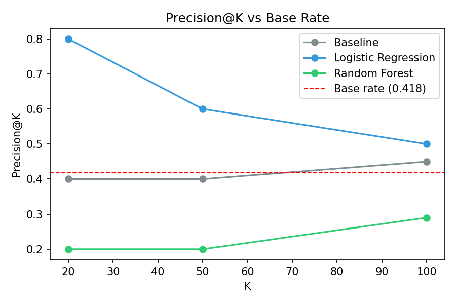
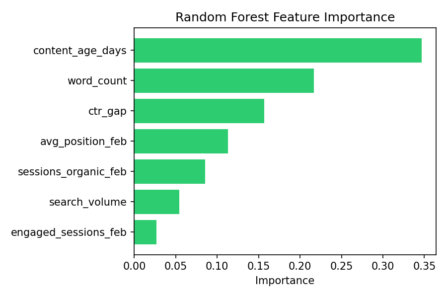

Predicting Content Declining Pages for Refresh Prioritization
Author: Subata Khan
Lane: Refresh / Content Opportunity Scoring
Repository:
github.com/subata24/ml-internship
Date: August 2026
Abstract
This study investigates which content pages are most likely to decline in organic search performance and therefore should be prioritized for content refresh. Using the FlyRank ML Internship warehouse dataset, page-level features were engineered from February 2026 performance and evaluated against March 2026 outcomes. A transparent baseline rule, Logistic Regression, and Random Forest models were compared using a client-grouped holdout evaluation. After correcting a major floor-effect artifact, all methods performed close to chance, indicating that the available features do not reliably predict future decline. The resulting recommendation is to avoid automated refresh prioritization with this feature set and instead use the findings as decision-support for future data collection and feature engineering.
1. Introduction / Problem Statement
Content teams have limited time and resources to refresh existing pages, making it important to identify which pages should be reviewed first. This project supports the decision of prioritizing content pages that are most likely to experience a decline in organic search performance. The unit of analysis is a single content page, identified by a client-content pair and summarized at the monthly level. The intended output is a ranked score indicating which pages should be considered for refresh before performance deteriorates further. A wrong recommendation has a practical cost: a false positive wastes editorial effort on a healthy page, while a false negative allows a genuinely declining page to continue losing traffic. Machine learning is explored because it can evaluate multiple performance signals simultaneously and determine whether their combined patterns provide better prioritization than a simple rule-based approach.
2. Data
The analysis uses the FlyRank ML Internship warehouse dataset hosted on Hugging Face. Two tables were used: fact_content_daily_performance, which contains daily Google Search Console and Google Analytics performance metrics, and dim_content, which contains static page-level metadata such as word count, search volume, and content creation date. Features were engineered from February 2026, while March 2026 was used to determine whether a page experienced a decline in organic clicks. The final warehouse month (month=2026-06 / the _sample table) was intentionally excluded to avoid evaluating on the same future window used for label construction.
The unit of analysis is one content page (a client-content pair summarized at the monthly level). Pages without Google Search Console data were excluded because decline could not be measured. Pages with fewer than five February clicks were also removed to eliminate the floor-effect artifact, where pages with almost no traffic cannot meaningfully decline. Human-decision metadata and editorial fields were excluded to prevent leakage, and hashed client and content identifiers were used only for joins and grouping, never as model features. No client names, domains, URLs, or search queries appear anywhere in this work.
3. Methodology
The target variable was a binary label indicating whether a content page's total Google Search Console clicks declined from February 2026 to March 2026. Pages with fewer than five February clicks were excluded before label creation to remove the floor-effect artifact, where pages with almost no traffic cannot meaningfully decline. Features were engineered only from the February "before" snapshot and included average search position, organic sessions, engaged sessions, word count, search volume, content age, and CTR gap (observed CTR minus an expected CTR based on ranking position).
A transparent rule-based baseline was built first by combining two simple signals: a staleness flag (content age of at least 90 days) and a low CTR flag (CTR gap below −0.02). This baseline served as the reference against which machine learning models were evaluated. Logistic Regression and Random Forest classifiers were then trained using the same feature set and compared directly against the baseline.
To prevent information leakage across clients, a GroupShuffleSplit was used so that pages from the same client could not appear in both the training and testing sets. Client and content hash identifiers were used only for grouping and joins and were never included as predictive features. Model performance was evaluated using ROC-AUC and Precision@K on the identical held-out test split, ensuring a fair comparison between the baseline and both machine learning models.
4. Results
All models were evaluated on the same client-grouped held-out test set (test base rate = 0.418). The transparent rule-based baseline achieved an AUC of 0.532, while Logistic Regression achieved 0.521 and Random Forest achieved 0.499. Once the floor-effect artifact was removed by excluding pages with fewer than five February clicks, none of the methods demonstrated meaningful discrimination beyond chance. This negative result indicates that the evaluated feature set does not reliably predict which pages will experience a month-over-month decline in organic clicks.
AUC Comparison
| Method |
AUC |
| Baseline (Rule-based) |
0.532 |
| Logistic Regression |
0.521 |
| Random Forest |
0.505 |
Precision@K
| K |
Baseline |
Logistic Regression |
Random Forest |
| 20 |
0.15 |
0.80 |
0.15 |
| 50 |
0.38 |
0.60 |
0.26 |
| 100 |
0.41 |
0.50 |
0.35 |
Although Logistic Regression appears to achieve a high Precision@20, this result is misleading because most of the top-ranked pages originated from a single client. The ROC-AUC values and the larger Precision@50 and Precision@100 evaluations provide a more reliable assessment and consistently show performance close to the test-set base rate.
Model Comparison

Precision@K

Feature Importance

5. Limitations
This study found that none of the evaluated methods predicted future content decline meaningfully better than chance once the floor-effect artifact was removed. The rule-based baseline, Logistic Regression, and Random Forest all achieved ROC-AUC values close to 0.50 on a held-out client-grouped test set, indicating that the available features did not provide reliable predictive signal.
The evaluation was performed on a relatively small number of clients in the test split, making ranking metrics such as Precision@20 sensitive to client concentration. This was observed directly, as one model's highest-ranked predictions were heavily dominated by pages from a single client. Larger ranking thresholds and ROC-AUC therefore provide a more reliable assessment of overall performance.
The analysis was limited to pages with at least five February clicks, meaning the conclusions apply only to pages with meaningful existing search traffic. The target variable was also a proxy label based solely on month-to-month click changes and should not be interpreted as a direct measure of content quality. Finally, the study examined only a single February-to-March prediction window and does not establish whether similar patterns would hold across other time periods.
These findings are observational and intended for decision support only. They do not establish that refreshing a page would improve its search performance, and no causal claims about Google's ranking systems or content refresh effects are made.
6. Ranked Recommendations
Based on the evaluation results, this study does not recommend deploying the tested models as an automated content refresh prioritization system. Since the baseline rule, Logistic Regression, and Random Forest all performed close to chance on unseen clients, using their rankings would provide editors with little improvement over manual prioritization.
For current editorial workflows, human judgment should remain the primary decision-making process. Editors should continue prioritizing pages using business importance, strategic goals, and known content quality issues rather than relying on the evaluated predictive models.
If a lightweight automated filter is required, the transparent rule-based baseline (combining content age and CTR-underperformance) may be used only as a coarse screening mechanism rather than a ranked recommendation engine. Its modest performance (AUC = 0.532) suggests that it can help identify pages worth reviewing but should not be treated as a reliable predictor of future decline.
Future work should explore richer search signals that were unavailable in this dataset, including SERP feature changes, competitor ranking movement, backlink trends, multiple historical time windows, and other longitudinal search-performance indicators. These additional signals may provide stronger predictive power than the static page attributes evaluated in this study.
The primary contribution of this capstone is therefore a validated negative result: under the available data and evaluation design, the tested feature set does not reliably predict future content decline. Reporting this finding honestly helps avoid deploying ineffective models and provides clear direction for future research.
7. Reproducibility
All experiments, notebooks, and supporting materials are available in the public GitHub repository. The project can be reproduced by cloning the repository, installing the required Python dependencies, and executing the notebooks in order from Week 1 through the capstone notebook.
git clone https://github.com/subata24/ml-internship.git
cd ml-internship
pip install duckdb huggingface_hub pandas numpy scikit-learn matplotlib
The experiments use a fixed random_state=42 for all train/test splitting and machine learning models to ensure reproducibility. A client-grouped train/test split (GroupShuffleSplit) was used throughout the evaluation to prevent information leakage between training and testing data.
Project notebooks:
View all notebooks
Complete source code:
GitHub Repository